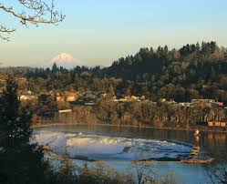
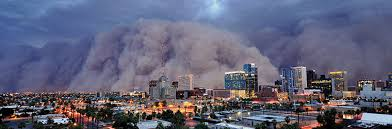
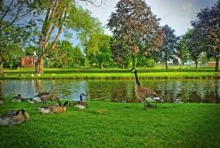

My Favorite Places
Domestic Places of Interest
- Portland, Oregon
- New York, New York
- Denver, Colorado
- Boston, Massachusetts
- Phoenix, Arizona
International Destinations of Excitement
There are also other favorite place of mine that are neither domestic or international but local.
 My sofa
My sofa- The local park
 The local coffeeshop
The local coffeeshop